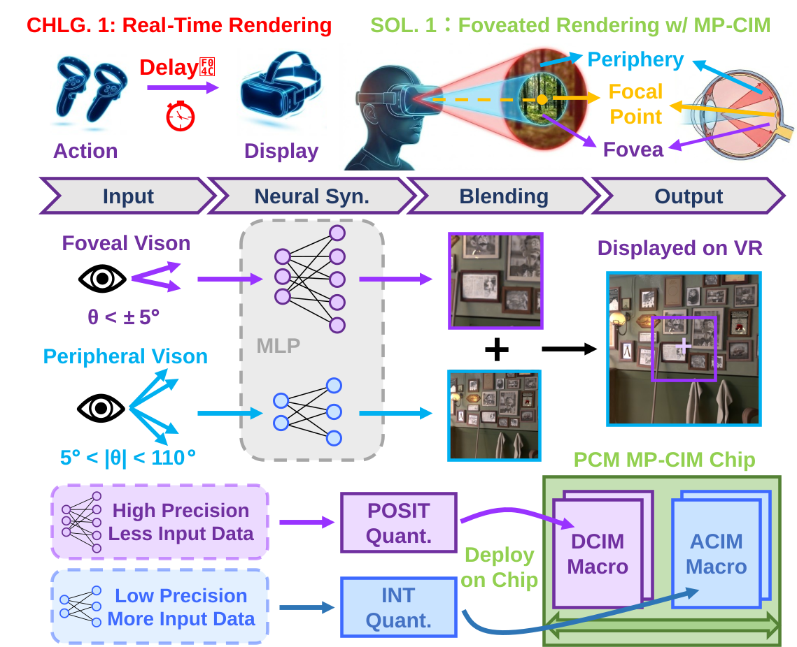
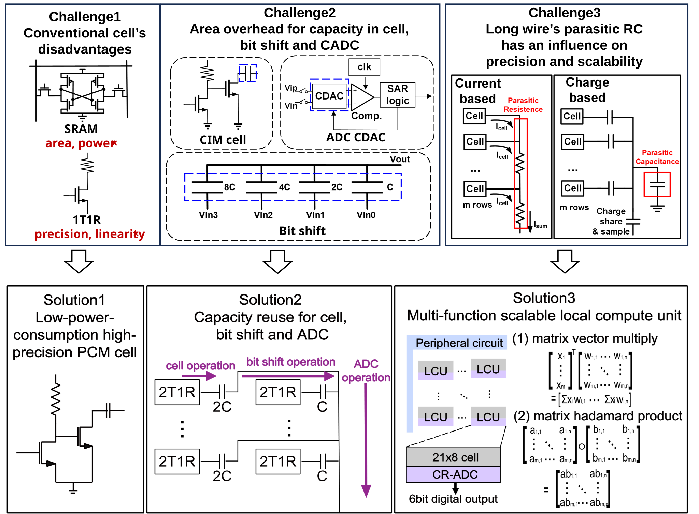
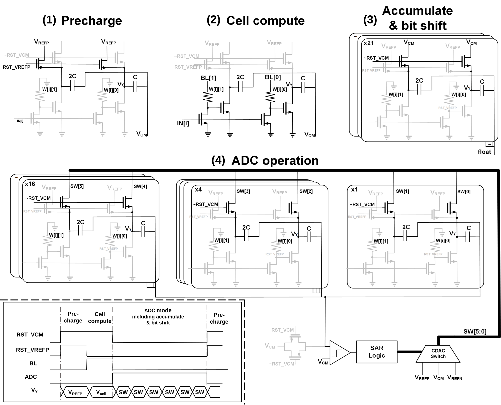

Peking University Academic Homepage
Welcome!
I am Bowen Wang, a Ph.D. student at the School of Integrated Circuits, Peking University. I am advised by Prof. Yuchao Yang from the School of Integrated Circuits and Researcher Yaoyu Tao from the Institute for Artificial Intelligence, Peking University.
My research interests include flash-aware AI deployment, compute-in-memory chips, error correction coding hardware, optical communication FEC architectures, and hardware accelerators for visual rendering.
Educations
- 2024.09 - 2029.06 (expected), Ph.D. in Science, School of Integrated Circuits, Peking University.
- 2020.09 - 2024.06, B.S. in Science, School of Electronics Engineering and Computer Science, Peking University. GPA: 3.75/4, ranking: 9/46.
- 2024.09 - 2025.06, Joint doctoral training experience at Beijing Academy of Artificial Intelligence.
Honors and Awards
- 2026, First Prize, Huawei Cup China Graduate IC Innovation Competition. The first-prize group was ranked among the top 18 out of more than 800 participants.
- Peking University Third Prize Scholarship.
- Shenzhen Stock Exchange Scholarship.
- Peking University Social Work Award, Academic Excellence Award, Outstanding League Member, and Merit Student.
- Outstanding League Member, School of Electronics Engineering and Computer Science, Peking University.
News
- 2026.09: Our foveated rendering CIM chip work was presented on ESSERC 2026.
- 2026.8: I received the First Prize in the Huawei Cup China Graduate IC Innovation Competition.
- 2026.4: Our PCM-based charge-domain CIM macro extension was published in IEEE ICAS.
- 2025.10: Our PCM-based charge-domain CIM macro paper was selected as a best paper candidate at IEEE ICTA 2025.
Main Publications
Conference Papers

[ESSERC'26] A 40nm 3.58 mJ/Frame PCM-Based POSIT/INT Mixed-Precision Digital/Analog CIM Chip for Edge Foveated Rendering.
Bowen Wang†, Zelun Pan†, Zhe Zhan, Longhao Yan, Jiukai Fang, Xile Wang, Yuqi Li, Minghui Yin, Xi Li, Zhitang Song, Yaoyu Tao, Yuchao Yang.
IEEE European Solid-State Electronics Research Conference, 2026.

[ICTA'25] A 617.7 TOPS/W PCM-Based Charge-Domain CIM Macro with Capacitor Reuse Method and Scalable Local Compute Unit.
Bowen Wang†, Longhao Yan†, Xiyuan Tang, Xile Wang, Yuqi Li, Zeyu Wang, Zelun Pan, Daijing Shi, Zhe Zhan, Yaoyu Tao, Zhitang Song, Yuchao Yang.
IEEE International Conference on Integrated Circuits, Technologies and Applications, 2025. Best paper candidate.
Journal Articles

[ICAS] A Scalable Charge-Domain CIM Macro With 2T1R1C Cells and Capacitor Reuse Method.
Bowen Wang†, Longhao Yan†, Xiyuan Tang, Xile Wang, Yuqi Li, Zeyu Wang, Zelun Pan, Daijing Shi, Zhe Zhan, Yaoyu Tao, Zhitang Song, Yuchao Yang.
IEEE Integrated Circuits and Systems, 2026.
Projects
Flash LDPC ECC Architecture, LLM Deployment, and Local Computing
Project lead, Chipsbank cooperation, 2025.07 - 2028.07.
- Completed the first two project phases by building C++ software code and test infrastructure for QC-LDPC parity-check matrix construction across multiple code lengths and rates, matrix-based encoding, GALE decoding for single-bit Flash readout, and normalized min-sum decoding for multi-bit Flash readout; iteratively optimized correction performance for TLC/QLC Flash reliability; and implemented the LDPC ECC RTL, optimized architecture, area, and throughput, and delivered a 200 MHz post-synthesis netlist while maintaining multi-code-length and multi-code-rate compatibility.
- In the ongoing third and fourth phases, studying Flash-side LLM deployment across different model architectures, efficient use of internal Flash bandwidth, and local customized computing circuits inside Flash-side control logic; exploring Flash-NPU hybrid architectures and CSD-assisted attention with task partitioning and scheduling across NPU/GPU, Flash dies/controllers, and SSD-level resources; analyzing single-batch LLM weight access and multi-batch long-sequence KV cache offloading bottlenecks from Flash page granularity, internal channel bandwidth, and host/accelerator data movement; and investigating Flash-oriented data mapping, row/column sparse reads, bandwidth optimization through storage redundancy, and lightweight on-die ECC for outlier-weight protection under Flash errors.
- Worked with the development team on code implementation and circuit architecture, held regular code reviews, and coordinated system architecture, module design, dataflow organization, project requirements, and milestone deliverables with the company team.
Low-Power oFEC Architecture for Optical Communication
- Implemented an openZR+ oFEC software performance baseline for medium- and long-reach optical interconnect scenarios.
- Designed a 256 Gbps single-lane oFEC decoder hardware baseline for 28 nm tape-out verification.
- Explored inner-decoder pooling, scheduling, and early-termination architectures to reduce decoder count while preserving error-correction performance.
High-Efficiency RRAM-Based Intelligent Chip
Project member, National Key R&D Program, 2022.11 - 2024.12.
- Contributed circuit modules for multiple compute-in-memory chips, including low-noise current-mode sense amplifiers, multi-level wear-leveling schedulers, and distributed capacitor SAR ADCs.
Other Research Experience
High-Throughput Low-Area Soft-Decision GRAND Decoder
2025.09 - Present.
- Working on chip architecture for GRAND, a universal decoding algorithm that guesses channel noise patterns in probability order for high-reliability communication scenarios.
Service and Student Work
- Deputy Minister, Youth League Committee Culture and Sports Department, Peking University.
- Undergraduate counselor, freshman counselor, and summer school counselor at Peking University.
Contact
Email: wangdaosen@stu.pku.edu.cn
Address: No. 5 Yiheyuan Road, Haidian District, Beijing, China.